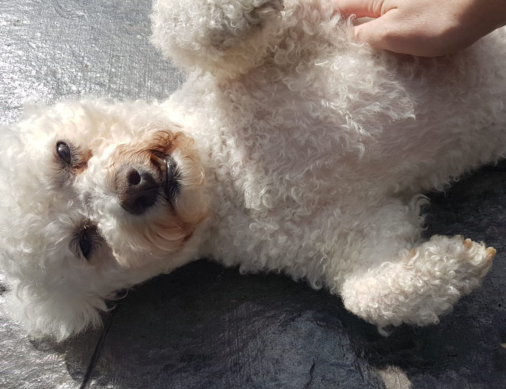
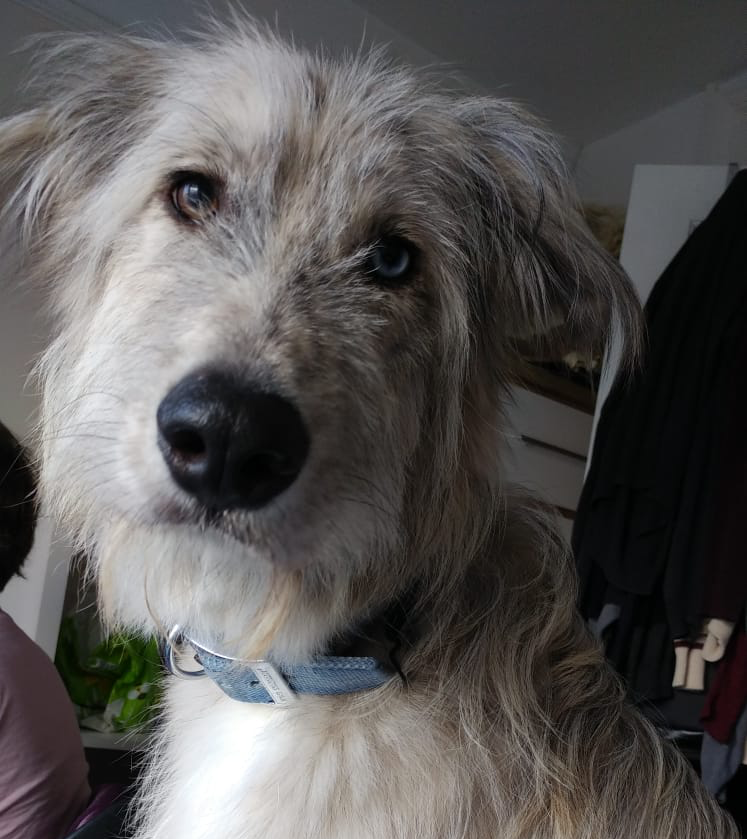
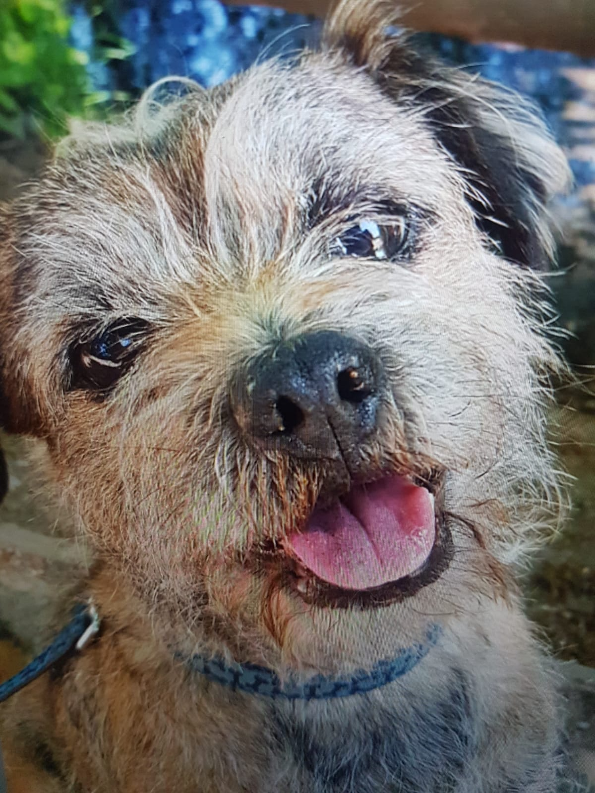

Cheese

- Age: 3 years
- Temperament: Excitable
- Requirements: Lots of walks, attention
- Dislikes: Wet food
Zelda
- Age: 12 years
- Temperament: Calm
- Requirements: Lots of attention
- Dislikes: Dogs
Dracula
- Age: 2 years
- Temperament: Cuddly, loud
- Requirements: Lots of attention, lots of play
- Dislikes: Basically nothing!
Inferno
- Age: 2 years
- Temperament: Maudlin
- Requirements: A fireplace, a luxurious bed, expensive food
- Dislikes: Kibble, bad lighting